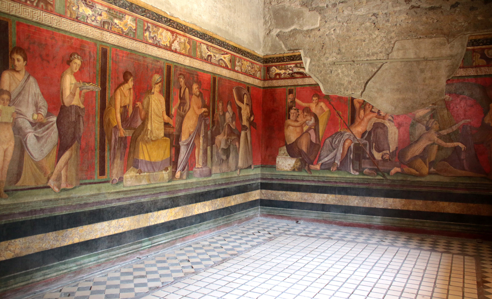
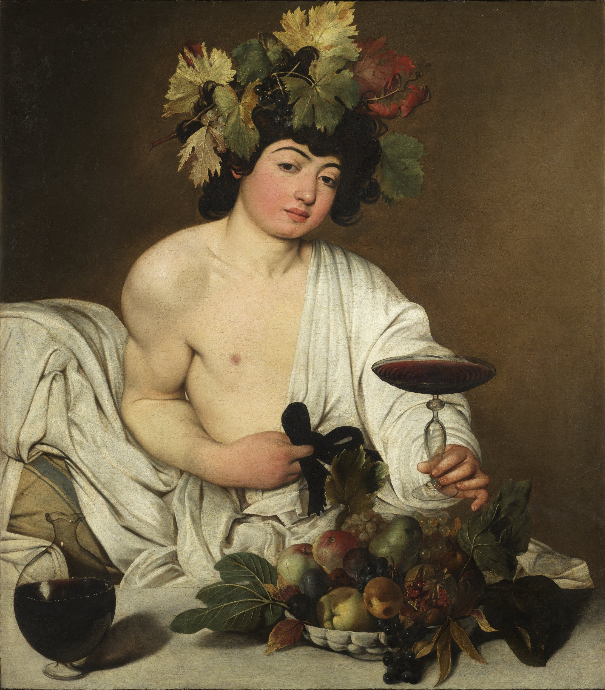
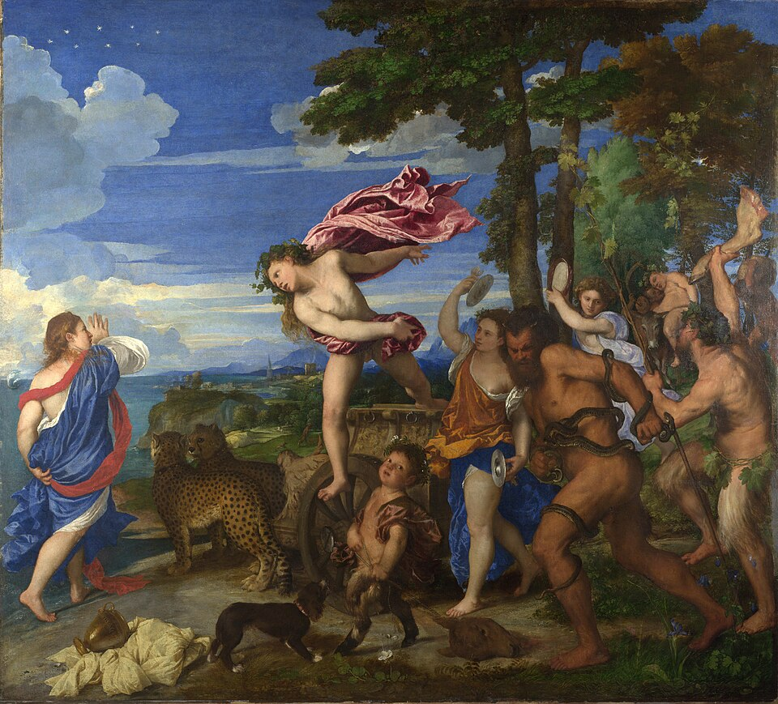

Dioniso es el dios más extraño del panteón. Es el único que muere y resucita. Es el único cuyo culto recorre el mundo antes de instalarse en Grecia: Tracia, Frigia, Anatolia, Egipto. Es el único que hace del desborde su método y de la disolución de los límites su teología. Y, como señalamos al estudiar el canon, es el que ocupa el lugar de Hestia en el panteón tardío: el dios del exceso reemplaza a la diosa del centro.1
Las Bacantes de Eurípides narran lo que ocurre cuando Penteo, rey de Tebas, intenta resistir la llegada del culto dionisíaco: su propia madre, en estado de trance báquico, lo mata y le arranca la cabeza creyendo que es un animal de caza.2 El mensaje es transparente: lo dionisíaco no se puede prohibir. Solo se puede integrar. El que intenta resistirlo desde el orden establecido será destruido por los suyos.
Warburg dedicó varias láminas de su Atlas Mnemosyne a la Pathosformel dionisíaca: el manto que vuela, el cuerpo que se curva hacia atrás en éxtasis, la cabeza echada hacia atrás, los cabellos sueltos.3 Esta fórmula de pathos aparece en los sarcófagos romanos, en los frescos de la Villa de los Misterios en Pompeya y en las pinturas renacentistas: desde las ménades griegas hasta el rock and roll, desde el teatro de Artaud hasta el trance electrónico.
Caravaggio lo entendió mejor que nadie: su Baco de los Uffizi (1596–97) no es un dios sino un adolescente con los ojos a medio cerrar, ofreciendo una copa que él mismo está bebiendo. Un individuo ordinario disfrazado de dios. O un dios que ha bajado tanto que ya es indistinguible de la humanidad.
Pathosformeln visualesAnónimo, Fresco dionisíaco de la Villa de los Misterios (c. 60 a.C.)
Villa de los Misterios, Pompeya
Ciclo completo del rito de iniciación dionisíaca: figuras en diversas etapas del trance, el dios recostado sobre Ariadna. Pathosformel del éxtasis dionisíaco en su forma más completa: la iniciación como encuentro con el desborde.
Caravaggio, Michelangelo Merisi da, Baco (1596–1597)
Galleria degli Uffizi, Florencia
Dioniso adolescente, sonrojado, ofreciendo una copa que está bebiendo él mismo. Pathosformel de la desmitificación: el dios reducido a su humanidad más literal. La copa como umbral entre lo sagrado y lo ordinario.
Tiziano Vecellio, Baco y Ariadna (1520–1523)
National Gallery, Londres
Dioniso saltando de su carro hacia Ariadna. Pathosformel del encuentro dionisíaco: la irrupción del desborde en la vida ordenada de quien esperaba otra cosa.